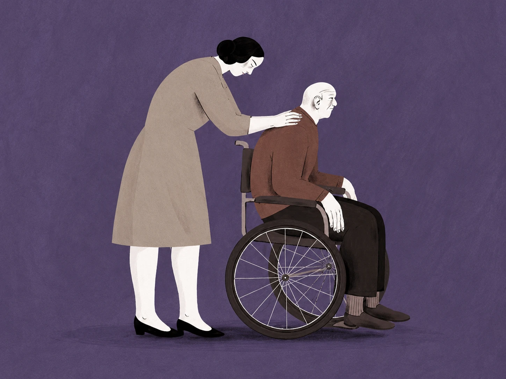

Curso grátis · 5 lições · ≈ 40 min
Cuidar em Crise
Primeiros socorros psicológicos para cuidadores de pessoas com demência.
As 5 lições
-
L1
Crise, demência e quem cuida
≈ 8 min
-
L2
Preparar antes
≈ 8 min
-
L3
Primeiro contacto: acalmar
≈ 8 min
-
L4
Necessidades e encaminhamento
≈ 8 min
-
L5
Depois da crise
≈ 8 min
Para quem é
Para quem cuida, em casa, de uma pessoa com demência ligeira a moderada. Um incêndio, uma cheia, uma pandemia ou a saída de casa quebram a rotina: a pessoa fica angustiada ou agitada, e quem cuida fica sobrecarregado. Em 5 lições curtas, aprende a preparar-se, a acalmar, a responder às necessidades imediatas e a reconhecer quando pedir ajuda especializada.
Regras de composição aplicadas
Ilustração da abertura: adaptada de Susa Monteiro, para o Diário do Alentejo.